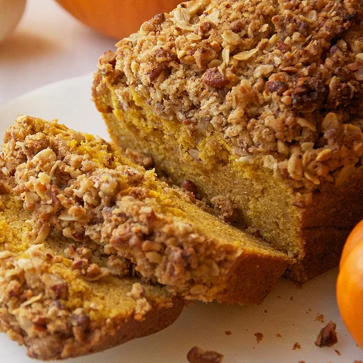

Walnut Streusel Pumpkin Bread

Description
Slightly spiced pumpkin bread is a fall staple. This version is topped with crumbly, walnut streusel that makes it
the perfect treat for breakfast or dessert.
- Prep: 15 mins
- Cook: 1 hr 5 mins
- Servings: 8
Ingredients
Pumkin Bread
- 1/2 cup salted butter, softened
- 1/2 cup sugar
li>
- 1/4 cup light brown sugar, packed
- 1 teaspoon vanilla extract
- 2 eggs
- 1 cup pumpkin puree
- 1/4 cup whole milk
- 1 1/2 cups all-purpose gluten-free flour
- 1 1/2 teaspoons baking powder
- 1/2 teaspoon baking soda
- 1/2 teaspoon salt
- 1/2 teaspoon ground cinnamon
- 1/4 teaspoon nutmeg
- 1/4 teaspoon ground ginger
Walnut Streusel Topping
- 1/4 cup salted butter, cold, cubed
- 1/4 cup light brown sugar
- 1/4 cup quick cooking oats
- 1/4 cup all-purpose gluten-free flour
- 1/2 cup walnut, chopped
Steps
- Preheat oven to 350 degrees F.
- Prepare streusel topping by mixing cold butter, light brown sugar, oats, flour and walnuts
together in a bowl. Cream together using a fork to forma large crumbles. Set aside
- In bowl of a stand mixer, cream together the softened butter and white sugar. Add light brown
sugar, vanilla, eggs and pumpking puree. Mix until incorporated.
- In a sperate bowl, sift together flour, baking soda, baking powder, salt and spices.
- With mixer on low speed, add half the dry mix to the wet ingredients and mix until
incorporated. Continue by adding the remainder of the dry ingredients and the milk
to the batter. Mix until the batter is smooth, be careful not to over mix.
- Pour batter into a greased loaf pan and sprinkle with the streusel topping.
- Place on middle rack of oven and bake for 65 minutes or until a toothpick comes out clean.
Remove bread from oven and allow to cool completely before serving.
Nutrition Facts
437 calories; protein 6.5g; carbohydrates 50.7g; fat 23.5g; cholesterol 92.8mg; sodium 535.4mg.